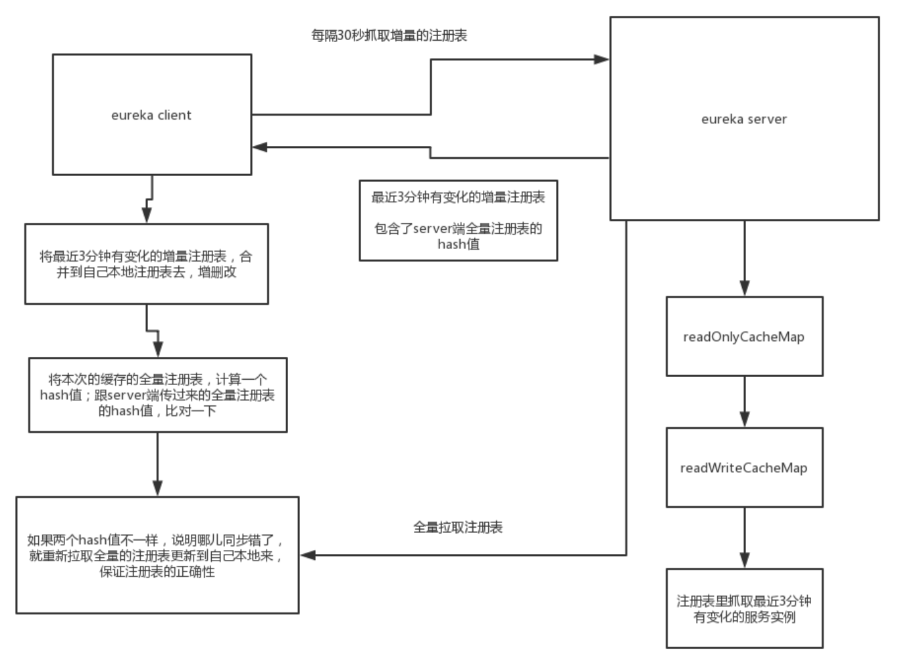

上一章，我详细讲解了Eureka-Client全量拉取注册表的机制和原理。本章，我将讲解增量拉取注册表的原理，整体流程我用下面这张图表示。本章，读者应当重点掌握增量数据保存的设计思路，以及数据同步的Hash比对机制。

DiscoveryClient在构造时，会启动一个定时调度任务，默认每隔30秒发送一次请求到Eureka-Server，拉取增量的注册表信息：
DiscoveryClient(ApplicationInfoManager applicationInfoManager, EurekaClientConfig config, AbstractDiscoveryClientOptionalArgs args, Provider<BackupRegistry> backupRegistryProvider) {
//...
try {
// 定时调度线程池
scheduler = Executors.newScheduledThreadPool(2,
new ThreadFactoryBuilder()
.setNameFormat("DiscoveryClient-%d")
.setDaemon(true)
.build());
//...
// 线程池，用来执行刷新本地缓存注册表的任务
cacheRefreshExecutor = new ThreadPoolExecutor(
1, clientConfig.getCacheRefreshExecutorThreadPoolSize(), 0, TimeUnit.SECONDS,
new SynchronousQueue<Runnable>(),
new ThreadFactoryBuilder()
.setNameFormat("DiscoveryClient-CacheRefreshExecutor-%d")
.setDaemon(true)
.build()
);
//...
// 初始化调度任务
initScheduledTasks();
//...
}
private void initScheduledTasks() {
if (clientConfig.shouldFetchRegistry()) {
// 参数eureka.client.refresh.interval可以设置注册表刷新间隔，默认30s
int registryFetchIntervalSeconds = clientConfig.getRegistryFetchIntervalSeconds();
// 重试延迟因子
int expBackOffBound = clientConfig.getCacheRefreshExecutorExponentialBackOffBound();
scheduler.schedule(
new TimedSupervisorTask(
"cacheRefresh",
scheduler,
cacheRefreshExecutor,
registryFetchIntervalSeconds,
TimeUnit.SECONDS,
expBackOffBound,
// 关键看这个任务
new CacheRefreshThread()
),
registryFetchIntervalSeconds, TimeUnit.SECONDS);
}
//...
}
真正执行任务的逻辑是在任务类CacheRefreshThread中：
/**
* DiscoveryClient.java
*/
class CacheRefreshThread implements Runnable {
public void run() {
refreshRegistry();
}
}
void refreshRegistry() {
try {
//...
// 拉取注册表
boolean success = fetchRegistry(remoteRegionsModified);
//...
} catch (Throwable e) {
logger.error("Cannot fetch registry from server", e);
}
}
最后，还是调用了DiscoveryClient#fetchRegistry()，此时本地缓存的注册表Applications不为null，最终会走增量拉取的逻辑DiscoveryClient.getAndUpdateDelta()。
/**
* DiscoveryClient.java
*/
private boolean fetchRegistry(boolean forceFullRegistryFetch) {
Stopwatch tracer = FETCH_REGISTRY_TIMER.start();
try {
// 1.获取本地缓存的注册表
Applications applications = getApplications();
if (clientConfig.shouldDisableDelta() // 如果禁用增量拉取注册表
|| (!Strings.isNullOrEmpty(clientConfig.getRegistryRefreshSingleVipAddress()))
|| forceFullRegistryFetch
|| (applications == null)
|| (applications.getRegisteredApplications().size() == 0)
|| (applications.getVersion() == -1))
{
logger.info("Disable delta property : {}", clientConfig.shouldDisableDelta());
logger.info("Single vip registry refresh property : {}", clientConfig.getRegistryRefreshSingleVipAddress());
logger.info("Force full registry fetch : {}", forceFullRegistryFetch);
logger.info("Application is null : {}", (applications == null));
logger.info("Registered Applications size is zero : {}",
(applications.getRegisteredApplications().size() == 0));
logger.info("Application version is -1: {}", (applications.getVersion() == -1));
// 2.执行全量拉取并缓存
getAndStoreFullRegistry();
} else {
// 3.执行增量拉取
getAndUpdateDelta(applications);
}
// 4.设置应用集合hashcode
applications.setAppsHashCode(applications.getReconcileHashCode());
// 打印本地缓存的注册应用实例数量
logTotalInstances();
} catch (Throwable e) {
logger.error(PREFIX + appPathIdentifier + " - was unable to refresh its cache! status = " + e.getMessage(), e);
return false;
} finally {
if (tracer != null) {
tracer.stop();
}
}
// ...
// 5.以拉取到的注册表为准，更新本地缓存中当前应用实例的状态（只更新缓存）
updateInstanceRemoteStatus();
return true;
}
增量拉取注册表的逻辑是在getAndUpdateDelta中，底层还是调用了AbstractJerseyEurekaHttpClient发送HTTP/GET请求到Eureka-Server，请求的URL形式类似http://localhost:8080/v2/apps/delta：
/**
* DiscoveryClient.java
*/
private void getAndUpdateDelta(Applications applications) throws Throwable {
long currentUpdateGeneration = fetchRegistryGeneration.get();
// 1.发送HTTP/GET请求增量拉取注册表(例如：http://localhost:8080/v2/apps/delta)
Applications delta = null;
EurekaHttpResponse<Applications> httpResponse = eurekaTransport.queryClient.getDelta(remoteRegionsRef.get());
if (httpResponse.getStatusCode() == Status.OK.getStatusCode()) {
delta = httpResponse.getEntity();
}
// 2.增量拉取结果为空，则全量拉取
if (delta == null) {
logger.warn("The server does not allow the delta revision to be applied because it is not safe. " + "Hence got the full registry.");
getAndStoreFullRegistry();
} else if (fetchRegistryGeneration.compareAndSet(currentUpdateGeneration, currentUpdateGeneration + 1)) {
logger.debug("Got delta update with apps hashcode {}", delta.getAppsHashCode());
String reconcileHashCode = "";
if (fetchRegistryUpdateLock.tryLock()) {
try {
// 3.将增量获取到的应用集合和本地缓存的应用集合进行合并
updateDelta(delta);
// 4.计算本地的应用集合一致性哈希码
reconcileHashCode = getReconcileHashCode(applications);
} finally {
fetchRegistryUpdateLock.unlock();
}
} else {
logger.warn("Cannot acquire update lock, aborting getAndUpdateDelta");
}
// There is a diff in number of instances for some reason
if (!reconcileHashCode.equals(delta.getAppsHashCode()) || clientConfig.shouldLogDeltaDiff()) {
// 一致性哈希值不相等，则全量拉取一次并记日志
reconcileAndLogDifference(delta, reconcileHashCode); // this makes a remoteCall
}
} else {
logger.warn("Not updating application delta as another thread is updating it already");
logger.debug("Ignoring delta update with apps hashcode {}, as another thread is updating it already", delta.getAppsHashCode());
}
}
拉取到结果后，会调用updateDelta(delta);将结果与本地注册表缓存合并：
/**
* DiscoveryClient.java
*/
private void updateDelta(Applications delta) {
int deltaCount = 0;
// 循环增量（变化）应用集合
for (Application app : delta.getRegisteredApplications()) {
// 遍历每一个应用的所有实例
for (InstanceInfo instance : app.getInstances()) {
Applications applications = getApplications();
//...
++deltaCount;
// 添加
if (ActionType.ADDED.equals(instance.getActionType())) {
Application existingApp = applications.getRegisteredApplications(instance.getAppName());
if (existingApp == null) {
applications.addApplication(app);
}
logger.debug("Added instance {} to the existing apps in region {}", instance.getId(), instanceRegion);
applications.getRegisteredApplications(instance.getAppName()).addInstance(instance);
}
// 修改
else if (ActionType.MODIFIED.equals(instance.getActionType())) {
Application existingApp = applications.getRegisteredApplications(instance.getAppName());
if (existingApp == null) {
applications.addApplication(app);
}
logger.debug("Modified instance {} to the existing apps ", instance.getId());
applications.getRegisteredApplications(instance.getAppName()).addInstance(instance);
}
// 删除
else if (ActionType.DELETED.equals(instance.getActionType())) {
Application existingApp = applications.getRegisteredApplications(instance.getAppName());
if (existingApp == null) {
applications.addApplication(app);
}
logger.debug("Deleted instance {} to the existing apps ", instance.getId());
applications.getRegisteredApplications(instance.getAppName()).removeInstance(instance);
}
}
}
logger.debug("The total number of instances fetched by the delta processor : {}", deltaCount);
getApplications().setVersion(delta.getVersion());
// 过滤并打乱应用集合的顺序
getApplications().shuffleInstances(clientConfig.shouldFilterOnlyUpInstances());
//...
}
最后，会将Eureka-Client端的合并完的注册表的hash值，跟Eureka-Server端的全量注册表的hash值进行一个比对：
reconcileHashCode = getReconcileHashCode(applications);
if (!reconcileHashCode.equals(delta.getAppsHashCode()) || clientConfig.shouldLogDeltaDiff()) {
// 一致性哈希值不相等，则全量拉取一次并记日志
reconcileAndLogDifference(delta, reconcileHashCode); // this makes a remoteCall
}
如果不一样的话，说明本地注册表跟Server端不一致，此时就会重新从Eureka-Server拉取全量注册表并更新到本地缓存。
接着，我们来看下Eureka-Server接受并处理增量拉取的流程。Eureka-Client发送的拉取注册表的HTTP/GET请求是类似这样的：http://localhost:8080/v2/apps/delta。
在Eureka-Server端，由ApplicationsResource#getContainerDifferential()负责处理注册表拉取请求，可以看到注册表是从一个ResponseCache对象中获取的，所以整个Server端的处理流程核心就是ResponseCache：
/**
* ApplicationsResource.java
*/
@Path("delta")
@GET
public Response getContainerDifferential(
@PathParam("version") String version,
@HeaderParam(HEADER_ACCEPT) String acceptHeader,
@HeaderParam(HEADER_ACCEPT_ENCODING) String acceptEncoding,
@HeaderParam(EurekaAccept.HTTP_X_EUREKA_ACCEPT) String eurekaAccept,
@Context UriInfo uriInfo, @Nullable @QueryParam("regions") String regionsStr) {
boolean isRemoteRegionRequested = null != regionsStr && !regionsStr.isEmpty();
// 是否禁用增量访问
if ((serverConfig.shouldDisableDelta()) || (!registry.shouldAllowAccess(isRemoteRegionRequested))) {
return Response.status(Status.FORBIDDEN).build();
}
//...
// 创建响应缓存(ResponseCache) 的键
// 注意这里的缓存Key是ALL_APPS_DELTA
Key cacheKey = new Key(Key.EntityType.Application,
ResponseCacheImpl.ALL_APPS_DELTA,
keyType, CurrentRequestVersion.get(), EurekaAccept.fromString(eurekaAccept), regions
);
// 从响应缓存(ResponseCache)读取增量注册信息
if (acceptEncoding != null
&& acceptEncoding.contains(HEADER_GZIP_VALUE)) {
// 关键是responseCache.getGZIP(cacheKey)
return Response.ok(responseCache.getGZIP(cacheKey))
.header(HEADER_CONTENT_ENCODING, HEADER_GZIP_VALUE)
.header(HEADER_CONTENT_TYPE, returnMediaType)
.build();
} else {
return Response.ok(responseCache.get(cacheKey))
.build();
}
}
ResponseCache的原理在上一章已经讲解过了，我就不赘述了。重点来看下ResponseCacheImpl.generatePayload(Key key)，这个方法会根据缓存Key获取注册表数据：
/**
* ResponseCacheImpl.java
*/
private final AbstractInstanceRegistry registry;
private Value generatePayload(Key key) {
Stopwatch tracer = null;
try {
String payload;
switch (key.getEntityType()) {
case Application:
boolean isRemoteRegionRequested = key.hasRegions();
// 1.全量拉取，略，上一章已讲解过
if (ALL_APPS.equals(key.getName())) {
//...
}
// 2.增量拉取
else if (ALL_APPS_DELTA.equals(key.getName())) {
//...
// 重点看这里: registry.getApplicationDeltasFromMultipleRegions(key.getRegions())
payload = getPayLoad(key,
registry.getApplicationDeltasFromMultipleRegions(key.getRegions()));
} else {
tracer = serializeOneApptimer.start();
payload = getPayLoad(key, registry.getApplication(key.getName()));
}
break;
//...
default:
logger.error("Unidentified entity type: " + key.getEntityType() + " found in the cache key.");
payload = "";
break;
}
return new Value(payload);
} finally {
if (tracer != null) {
tracer.stop();
}
}
}
// 将Applications转换成缓存值
private String getPayLoad(Key key, Applications apps) {
EncoderWrapper encoderWrapper = serverCodecs.getEncoder(key.getType(), key.getEurekaAccept());
String result;
try {
result = encoderWrapper.encode(apps);
} catch (Exception e) {
//...
}
//...
return result;
}
上述获取增量注册表信息的逻辑的重点在与方法registry.getApplicationDeltasFromMultipleRegions()，registery就是Server端的注册表PeerAwareInstanceRegistryImpl。
我们来看下AbstractInstanceRegistry.getApplicationDeltasFromMultipleRegions()。重点是它从一个recentlyChangedQueue队列中遍历出所有应用信息，然后返回：
/**
* AbstractInstanceRegistry.java
*/
//最近租约变更记录队列
private ConcurrentLinkedQueue<RecentlyChangedItem> recentlyChangedQueue = new ConcurrentLinkedQueue<RecentlyChangedItem>();
public Applications getApplicationDeltasFromMultipleRegions(String[] remoteRegions) {
//...
Applications apps = new Applications();
apps.setVersion(responseCache.getVersionDeltaWithRegions().get());
Map<String, Application> applicationInstancesMap = new HashMap<String, Application>();
try {
write.lock();
// 遍历【最近租约变更记录队列】
Iterator<RecentlyChangedItem> iter = this.recentlyChangedQueue.iterator();
logger.debug("The number of elements in the delta queue is :" + this.recentlyChangedQueue.size());
while (iter.hasNext()) {
// 租约
Lease<InstanceInfo> lease = iter.next().getLeaseInfo();
// 应用实例
InstanceInfo instanceInfo = lease.getHolder();
Object[] args = {instanceInfo.getId(),
instanceInfo.getStatus().name(),
instanceInfo.getActionType().name()};
logger.debug("The instance id %s is found with status %s and actiontype %s", args);
// 应用信息
Application app = applicationInstancesMap.get(instanceInfo.getAppName());
if (app == null) {
app = new Application(instanceInfo.getAppName());
applicationInstancesMap.put(instanceInfo.getAppName(), app);
// 添加到结果集
apps.addApplication(app);
}
app.addInstance(decorateInstanceInfo(lease));
}
//...
// 获取全量应用集合，计算全量集合的hash值
Applications allApps = getApplications(!disableTransparentFallback);
// 保存这个hash值，注意这里apps本身保存的是增量注册表
apps.setAppsHashCode(allApps.getReconcileHashCode());
return apps;
} finally {
write.unlock();
}
}
上述的recentlyChangedQueue，本质是一个ConcurrentLinkedQueue（底层基于单链表实现的无锁并发队列），里面保存着最近有变化的应用实例。
也就是说Eureka-Server发现有应用实例注册、下线、状态变更时，它会创建一个 RecentlyChangedItem对象并入队：
/**
* AbstractInstanceRegistry.java
*/
private ConcurrentLinkedQueue<RecentlyChangedItem> recentlyChangedQueue = new ConcurrentLinkedQueue<RecentlyChangedItem>();
private static final class RecentlyChangedItem {
/**
* 最后更新时间戳
*/
private long lastUpdateTime;
/**
* 租约
*/
private Lease<InstanceInfo> leaseInfo;
public RecentlyChangedItem(Lease<InstanceInfo> lease) {
this.leaseInfo = lease;
lastUpdateTime = System.currentTimeMillis();
}
public long getLastUpdateTime() {
return this.lastUpdateTime;
}
public Lease<InstanceInfo> getLeaseInfo() {
return this.leaseInfo;
}
}
然后， PeerAwareInstanceRegistryImpl在构造时，会创建一个定时调度任务，这个任务默认每隔30秒扫描一下`recentlyChangedQueue队列，当发现有Item在队列里的停留时间超过一定时长（默认180秒）后，就把它移除。
也就是说：这个recentlyChangedQueue，就保留了最近3分钟的应用实例变更记录。
/**
* AbstractInstanceRegistry.java
*/
this.deltaRetentionTimer.schedule(getDeltaRetentionTask(),
serverConfig.getDeltaRetentionTimerIntervalInMs(),
serverConfig.getDeltaRetentionTimerIntervalInMs());
private TimerTask getDeltaRetentionTask() {
return new TimerTask() {
@Override
public void run() {
Iterator<RecentlyChangedItem> it = recentlyChangedQueue.iterator();
while (it.hasNext()) {
// 是否超时
if (it.next().getLastUpdateTime() < System.currentTimeMillis() - serverConfig.getRetentionTimeInMSInDeltaQueue()) {
it.remove();
} else {
break;
}
}
}
};
}
eureka.deltaRetentionTimerIntervalInMs： 定时任务执行频率，单位：毫秒，默认 ：30 1000 毫秒。eureka.retentionTimeInMSInDeltaQueue：队列中保存的应用实例有效期，单位：毫秒，默认：3 60 * 1000 毫秒。
了解增量拉取注册表的流程，本节我们来看下Hash比对的底层原理，首先回顾下整个增量拉取流程：
应用集合的hash值，就是Applications.appsHashCode 。它是如何计算的呢？我们来看下一下代码：
/**
* Applications.java
*/
public String getReconcileHashCode() {
// 计数集合 key：应用实例状态
TreeMap<String, AtomicInteger> instanceCountMap = new TreeMap<String, AtomicInteger>();
populateInstanceCountMap(instanceCountMap);
// 计算 hashcode
return getReconcileHashCode(instanceCountMap);
}
public void populateInstanceCountMap(Map<String, AtomicInteger> instanceCountMap) {
for (Application app : this.getRegisteredApplications()) {
for (InstanceInfo info : app.getInstancesAsIsFromEureka()) {
// 计数
AtomicInteger instanceCount = instanceCountMap.computeIfAbsent(info.getStatus().name(),
k -> new AtomicInteger(0));
instanceCount.incrementAndGet();
}
}
}
public List<Application> getRegisteredApplications() {
return new ArrayList<Application>(this.applications);
}
public static String getReconcileHashCode(Map<String, AtomicInteger> instanceCountMap) {
StringBuilder reconcileHashCode = new StringBuilder(75);
// 这里拼接字符串，把它作为hash值
for (Map.Entry<String, AtomicInteger> mapEntry : instanceCountMap.entrySet()) {
reconcileHashCode.append(mapEntry.getKey()).append(STATUS_DELIMITER) // status
.append(mapEntry.getValue().get()).append(STATUS_DELIMITER); // count
}
return reconcileHashCode.toString();
}
所以，Applications的hash值的计算公式就是：将每个应用实例状态( status ) 与 数量( count ) 进行拼接。若数量为0，则不进行拼接。状态以字符串大小排序。
appsHashCode = ${status}_${count}_
举个例子，假设现在一共有8个应用实例，其中8 个 UP ，0 个 DOWN ，则 ：
appsHashCode = DOWN_2_UP_8_
本章，我讲解了Eureka进行增量拉取注册表的核心流程及原理。Eureka在设计这块时，有两个地方比较值得我们借鉴：